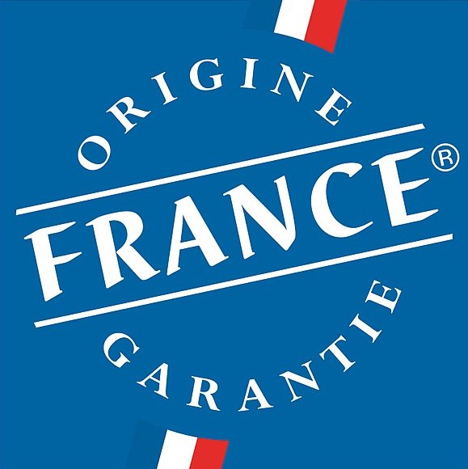

Difficile d’y voir clair parmi la profusion de labels qui s’affichent sur les produits. Certains reflètent une vraie qualité de produit, mais d’autres relèvent purement du marketing. Voici notre décryptage des principaux labels réalisé à l’aide du nutritionniste Anthony Berthou.
Les labels officiels
Label Rouge
- Le produit présente un niveau de qualité supérieure à la moyenne de la catégorie du fait de ses conditions de production et de fabrication.
- Chaque catégorie de produits doit respecter un cahier des charges spécifiques. Par exemple, pour les poules et oeufs, les poules doivent obligatoirement avoir accès à l’air libre quand elles le souhaitent, et l’alimentation ne doit pas être composée de matières animales ainsi que d’additifs.
Notre avis
Il garantit une vraie qualité gustative et des conditions de production supérieures. Mais il ne garantit pas une meilleure qualité nutritionnelle. Par ailleurs, pour certains produits comme le foie gras, le cahier des charges est relativement souple et peut-être obtenu pour des produits de qualité médiocre.

AOC (Appellation d’origine contrôlée)
- Toutes les étapes (production, transformation, élaboration) sont réalisées selon un savoir-faire reconnu dans une aire géographique déterminée, qui donne ses caractéristiques au produit.
- Ce label est aujourd’hui uniquement utilisé pour les vins, cidres et eaux-de-vie : Côtes de Bordeaux, Petit-Chablis, pommeau de Bretagne, etc.
Notre avis
Il permet de garantir un lien entre un produit réputé et son terroir d’origine. Mais cela ne garantit pas forcément que le produit soit meilleur nutritionnellement.
AOP (Appellation d’origine protégée)
- L’AOP est l’équivalent européen de l’AOC.
- Depuis 2012, les produits AOC doivent porter la mention AOP uniquement (à l’exception des vins, cidres et eaux de vie).
- Il permet de protéger les produits de terroir des imitations et contrefaçons : camembert de Normandie, pommes du Limousin, piment d’Espelette, etc.
Notre avis
Tout comme l’AOC, c’est un label fiable permettant de valoriser le savoir-faire local et de protéger les produits contre l’usurpation des appellations. Un bémol cependant en ce qui concerne le Camembert de Normandie : des discussions sont en cours afin que le camembert AOP puisse contenir du lait pasteurisé (et pas uniquement du lait cru). Il serait dommage que le cahier des charges de ce label s’assouplisse et perde de son sens.
IGP (Indication géographique protégée)
- Moins exigeant que l’AOP, il atteste d’un lien au territoire (sel de Guérande, miel de Provence, emmental de Savoie, etc.).
- Au moins une étape parmi la production, la transformation ou l’élaboration du produit doit avoir lieu dans l’aire géographique délimitée. Toutes les phases d’élaboration ne sont donc pas obligatoirement réalisées dans l’aire géographique en question.
Notre avis
Privilégiez l’AOP qui impose que toutes les étapes de fabrication aient été réalisées dans l’aire géographique.

STG (Spécialité traditionnelle garantie)
- Valorise la composition traditionnelle d’un produit ou un mode de production traditionnel, sans nécessairement de lien avec une origine géographique.
- Ce label consacre donc une recette, quel que soit son lieu de fabrication. Exemple : mozzarella, jambon Serrano, moules de Bouchot, etc.
Notre avis
Ce label valide uniquement une recette traditionnelle ou un mode de production, mais ne dit rien sur l’origine géographique. Ainsi, un jambon Serrano labellisé STG peut très bien avoir été fabriqué à l’autre bout du monde.
Le label Bleu-Blanc-Coeur
Bleu-Blanc-Coeur
- L’association Bleu-Blanc-Coeur a pour objectif de lutter contre les maladies de civilisation (cancer, diabète, obésité, alzheimer, etc.) en améliorant l’alimentation des animaux afin de garantir des produits de meilleure qualité nutritionnelle.
- Pour cela, elle réintroduit les graines de lin, l’herbe et la luzerne (riches en Oméga 3) dans l’alimentation du bétail. L’objectif : produire du lait, des œufs et de la viande plus riches en Oméga 3 donc meilleurs pour la santé. En effet, si les Oméga 3 et Oméga 6 sont des acides gras essentiels à notre corps, nous consommons aujourd’hui trop d’Oméga-6 par rapport aux Oméga-3 (voir notre article sur les lipides).
Notre avis
C’est un très bon label, malheureusement pas assez connu. Il garantit un meilleur équilibre Oméga 3 / Oméga 6, et donc des produits de meilleure qualité nutritionnelle. Par ailleurs, les animaux recevant une alimentation plus riche en Oméga 3 sont en meilleure santé et nécessitent moins de médicaments et d’antibiotiques, ce qui là encore est bénéfique pour la santé. En revanche, il ne garantit pas forcément de meilleures conditions d’élevage des animaux.
Les labels Bio

AB (Agriculture Biologique) et Eurofeuille (Bio Européen)
- Depuis 2010, le label bio français repose sur les mêmes exigences que le label bio européen. Seul le label européen est obligatoire : le label français continue d’être affiché uniquement parce qu’il est plus connu des consommateurs. Avant 2010, le label AB reposait sur des conditions plus strictes : ses critères ont malheureusement été assouplis avec la nouvelle réglementation européenne de 2010.
- Ces labels garantissent que les cultures se font sans pesticides chimiques ni traitements chimiques avant et après récolte. Les animaux sont nourris d’une alimentation sans pesticides. Cependant, un produit transformé bio peut contenir jusqu’à 5% d’ingrédients non bio.
- Les OGM sont interdits mais un seuil fortuit pouvant aller jusqu’à 0,9% est toléré.
- Dans les élevages, les traitements hormonaux sont interdits et le recours aux antibiotiques est limité : les poules pondeuses ne peuvent recevoir que 3 traitements antibiotiques par an par exemple.
- Depuis 2010, le nouveau règlement autorise les exploitations à produire à la fois du bio et du non-bio.
Notre avis
Le label bio est une bonne garantie, mais il est dommage que les conditions du label AB se soient assouplies et que ce label ne garantisse désormais rien de plus que le label européen. Par ailleurs, ces labels n’apportent pas de garantie sur la qualité nutritionnelle.

Bio Cohérence
- Ce label a été créé en 2010 afin de conserver les conditions plus strictes de l’ancien label AB, qui ont été assouplies avec la nouvelle réglementation européenne.
- Il garantit 100% d’ingrédients bio dans les produits transformés, un seuil maximal de contamination d’OGM de 0,1% dans les produits transformés et la non-coexistence de cultures bio/non-bio.
- L’origine des ingrédients doit être française (sauf si l’ingrédient n’existe pas en France) et 100% de la fabrication des produits doit se faire en France. Ce label permet ainsi de conserver le lien au territoire qui a été perdu avec l’harmonisation européenne.
Notre avis
Il s’agit d’un excellent label qui garantit un niveau d’exigence supérieur au label européen. Dommage qu’il soit peu répandu.

Demeter
- Il s’inspire de l’agriculture biodynamique, qui considère qu’il faut prendre soin des sols pour obtenir des aliments de qualité. La biodynamie prend en compte le mouvement des astres pour établir les calendriers de plantation.
- L’utilisation de produits chimiques est bannie. Les sols sont préparés et nourris avec des mélanges naturels biodynamiques (bouse de corne, silice de corne, compost de bouse, etc.).
- La taille des exploitations est limitée, et le respect du bien-être animal est central (80% de l’alimentation issue de la ferme, reproduction naturelle, écornage interdit, etc.).
Notre avis
Ce label est également très intéressant : plus exigeant que le label bio européen, il respecte un certain nombre de principes supplémentaires.
Nature & Progrès
- Ce label historique date de 1971. Contrairement aux autres labels bio ci-dessous, il n’exige pas que les produits aient obtenu le label bio européen. Il est cependant plus exigeant que le label européen.
- Aucune trace d’OGM n’est tolérée, l’utilisation de l’huile de palme est interdite, les fermes doivent être 100% bio et ne peuvent donc pas mixer des cultures bio et non-bio, la taille des fermes est limitée.
Notre avis
Tout comme les 2 labels précédents, il va au-delà des critères européens sur plusieurs points, et est donc un label bio de qualité.
Les labels marketing

Elu produit de l’année
- Un jury de 20 000 consommateurs élit les produits de l’année selon 3 critères : innovation perçue, attractivité et satisfaction. Les échantillons sont envoyés aux consommateurs qui répondent à un questionnaire, mais rien ne permet d’affirmer qu’ils les ont réellement goûtés. Le produit est également testé ensuite en situation réelle auprès de 600 utilisateurs.
- Seules les entreprises ayant payé peuvent concourir.
Notre avis
Sans intérêt, c’est uniquement un outil de communication pour les marques qui ne garantit en rien la qualité des produits

Reconnu Saveur de l’année
- Un jury de 120 consommateurs goûte des produits et évalue leur qualité gustative.
- Tout comme le label précédent, les marques paient pour figurer dans la sélection.
Notre avis
C’est là encore surtout un outil de communication à destination des marques. Il permet uniquement de valider que le produit a plu gustativement à un jury de consommateurs.
Les labels sur la provenance

Viandes de France
- La viande doit être issue d’animaux nés, élevés, abattus, découpés et transformés en France.
- Le label garantit aussi un mode de production respectueux de l’environnement et du bien-être animal, des normes sanitaires strictes, et une traçabilité totale.
- Ce label se décline à travers 10 logos selon le type de viande : Le Porc Français, Viande Bovine Française, Volaille Française, etc.
Notre avis
Ce label garantit bien l’origine française de la viande. En revanche, il ne garantit pas la qualité intrinsèque de la viande (il n’y a pas d’exigence sur l’alimentation des animaux).

Origine France Garantie
- Ce label qui date de 2011 repose sur 2 critères principaux. Le premier critère exige qu’au moins 50% du prix de revient unitaire doit être acquis en France. Cela signifie que la moitié des coûts liés à la production et à la R&D, jusqu’à la sortie d’usine ou d’atelier, doit doivent être liés à une activité domestique. En revanche, cela ne comprend pas les coûts de commercialisation et de marketing.
- Par ailleurs, le produit doit “prendre ses caractéristiques essentielles en France”. Toutes les étapes de fabrication n’ont pas forcément lieu en France : seules les étapes où le produit a pris sa forme distinctive doivent avoir eu lieu en France. Par exemple, pour un produit naturel, l’extraction ou la récolte doit avoir eu lieu en France. Pour un produit transformé, la préparation et le conditionnement doivent avoir eu lieu en France, et l’ingrédient principal doit être d’origine France.
Notre avis
C’est une bonne garantie sur l’origine France des produits. Cela ne signifie pas pour autant que l’ensemble de la fabrication a eu lieu en France, ni que 100% des ingrédients sont français pour les produits transformés.

Pavillon France
- Les produits estampillés doivent avoir été pêchés par un bateau battant pavillon français.
- Pavillon France constitue une garantie de traçabilité des produits issus de la pêche française, du bateau jusqu’à l’étal. Elle garantit également un niveau de fraîcheur des produits.
Notre avis
Cel label permet de valoriser la pêche française. Il pourrait cependant aller plus loin pour lutter contre la surpêche et valoriser une pêche plus responsable.
Les labels équitables et environnementaux
Fairtrade Max Haavelar
- Le produit a été acheté à un prix garantissant aux producteurs du Sud une autonomie suffisante. Le produit doit par ailleurs avoir été réalisé dans des conditions respectueuses des droits de l’homme.
- Ce label assure également des garanties environnementales : interdiction des OGM, usage raisonné des pesticides, gestion durable du sol et de l’eau, etc.
Notre avis
Si l’initiative initiale est bonne, ce label présente aujourd’hui plusieurs limites. Tout d’abord, un prix d’achat unique est déterminé par produit et appliqué de la même manière à des pays qui n’ont pas le même niveau de vie. Par ailleurs, le label s’est ouvert aux grands groupes. Ainsi, des groupes comme Carrefour ou Auchan proposent des produits labellisés qui viennent concurrencer des marques spécialisées comme Alter Eco ou Ethiquable, qui imposent des conditions plus strictes. Cette ouverture à la grande distribution a altéré le sens initial de la démarche : il est par exemple possible de boire un café Max Haavelar chez Mac Donald’s, pourtant connu pour ses pratiques sociales controversées.

Pêche Durable MSC
- Il interdit les techniques de pêche destructives comme la dynamite ou l’utilisation de poison. Les pêcheries certifiées doivent assurer la pérennité des stocks de poisson dans leurs zones de pêche et réduire l’impact de leurs activités sur le milieu marin.
Notre avis
Ce label fait l’objet de polémiques : des pêcheries controversées pêchant des espèces surexploitées ont ainsi été certifiées. L’organisation WWF, qui a cofondé le MSC en 1997, a elle-même critiqué les pratiques du MSC.

Rainforest Alliance
- L’objectif initial de ce label vise à sauver la forêt tropicale et l’extinction des espèces causée par la déforestation. Il garantit ainsi une production agricole respectueuse de la diversité. Par exemple, la destruction de la forêt tropicale et la chasse des animaux sauvages sont prohibées, les déchets ne doivent pas être rejetés dans les réseaux hydroliques naturels, un certain nombre de susbstances chimiques sont interdites.
- Le label impose aussi des critères sociaux obligatoires, mais moins stricts que ceux du commerce équitable. Par exemple, il n’y a pas de prix d’achat minimum garanti.
Notre avis
Comme MSC, l’ONG est régulièrement critiquée. La certification de masse qu’elle exerce rend les contrôles des plantations difficiles pour s’assurer du respect des critères : des études ont ainsi conclu que les critères de certification ne sont pas toujours respectés. Les grandes entreprises se sont pas ailleurs emparé du logo : elles vendent ainsi des produits Rainforest Alliance, parfois à des prix très bas, ce qui permet difficilement de garantir une juste rémunération des producteurs.
Si vous voulez en savoir plus sur la façon dont on peut concilier nutrition et environnement, vous pouvez consulter l’article d’Anthony Berthou : http://www.sante-et-nutrition.com/nutrition-environnement/

Votre article permet une plus grande visibilité dans les labels proposés. Ça m’a permus de mieux m’y retrouver. Continuez comme cela votre application est très intéressante. Merci à vous
Merci pour cet article qui nous aide à mieux nous y retrouver dans tous ces labels !
Merci pour toutes ces précisions qui nous sont très utiles compte tenu de tous ces labels qui ne veulent plus rien dire. Pour ma part, je me cantonnerai à ceux que vous recommandez. Merci encore
je fait mes courses a la vie claire.les viandes chez le boucher le pain bio. pour le reste je suis trop vieux pour suivre toutes vos recomeendationes (79) .
merci pour votre application!!!!!! je fais mes courses avec et j’essaie aussi d’éduquer mes filles dans le choix de leur alimentation
très bien, clarifie les acquis .
Merci pour vos infos édifiantes et utiles, pour votre investissement et votre sérieux reconnus, au service des consommateurs.
Très bonne idée de sujet. Maintenant j’y vois beaucoup plus claire. Bravo et merci
Merci Blomy pour cette analyse ! Qui, en plus, parle de Bleu-Blanc-Coeur parmi les autres labels ! Enfin un label qui prend en compte les notions nutritionnelles. Votre explication du label Bleu Blanc Coeur est qualitative .
Bravo !! Merci Blomy pour ce travail très clair et très complet .
Et je suis très satisfait de voir enfin les notions nutritionnelles prises en compte .Votre explication du label Bleu Blanc Coeur est de grande qualité .
Je travaille avec des éleveurs qui ont adoptés cette démarche depuis 2012 et je suis témoin de l’impact direct de la meilleure nutrition des animaux sur la santé et la qualité des produits . L’obligation de résultat (unique pour un label de l’agroalimentaire), mesurés scientifiquement, nous permet de garantir une régularité sur la densité nutritionnelle .Une fierté pour tous les éleveurs et des produits bons pour notre santé !!!!
Bravo pour votre efficacité et votre bonne étude comparative!!!!
Descriptif très didactiques, c’est super, bravo.
Une petite suggestion : proposer un tableau avec +/-, plus facile à conserver sur son smartphone lorsque l’on fait ses achats…
Ma fille m’a fait découvrir les produits Bleu-Blanc-Coeur il y a quelques années maintenant. Je peux dire que j’ai été séduite par la démarche collective que porte cette association : « Bien nourrir les animaux pour bien nourrir les hommes ».
La semaine dernière, J’ai eu occasion de rencontrer des eleveurs qui produisent en Bleu-Blanc-Coeur ! Leurs témoignages m’a conforté en tant que consommatrice de cette démarche qualité! Des animaux en meilleur santé, des éleveurs fiers de leur métier. Des éleveurs qui prennent leurs responsabilités, qui agissent pour le mieux manger….et des consommateur rassurés!
Transparence, traçabilité, garantie de qualité nutritionnelle pour obtenir des des produits savoureux, tendre,… Que dire de plus ou de mal quand il y en a qui font des choses bien !
Merci de m’avoir éclairée sur certains labels et de m’en avoir fait connaitre d’autres …….
J ‘y vois plus clair 👀, 👏 #yuka 🥕, moi c’est d’abord le label Bleu-Blanc-Coeur complémenté avec un autre label. 😉
Merci yuka Dur dur avec ces labels bleu blanc coeur le jambon contient des additifs alors ?
Étude importante. Enfin les critères de soi-disant qualité sont disséqués. Les logos plus sont plus clairs désormais. Une fois de plus merci Blomy..
Très bonne étude comparative, on y voit plus clair. Toutefois difficile de se souvenir au moment de faire son marché. Pourquoi pas un récapitulatif visuel à porter sur soi? Merci
bonjour
vous remerciant de ce que vous faites , c est très instructif , maintenant je passe plus de temp a faire les cours ( chose que je n aime pas faire ) mais je ne limitée ma consommation de cochonneries en scannant mes articles . merci beaucoup a vous et très bonne continuation .
Aline
Bonjour Julie et les Autres,
Effectivement le bio !! (Depuis 2010, le label bio français repose sur les mêmes exigences que le label bio européen….. le label AB reposait sur des conditions plus strictes : ses critères ont malheureusement été assouplis avec la nouvelle réglementation européenne de 2010). Je me suis sentie trahie! personne n’a réagis; nos gilets Verts au gouvernement de l’époque n’étaient pas assez convaincants/militants contre => la politique et les « deutsch-euro » un grand merci à Monsanto et Bayer qui nous vend ses médicaments. Juste un constat et moi : « je suis gilet rose » => je défends la Vie en Rose, notre planète
bonne et heureuse journée à Vous tous
J’apprécie toutes ces informations mais trop complexes pour les suivre.la mondialisation nous contraint à toujours produire plus et ADIEU la nature….. Quel dommage !
J’ai appris beaucoup. Je regrette la multiplication de ces labels qui rende difficile le choix du produit. Merci
moi qui regarde les labels , je suis déçue sur le label rouge qui n’est pas en bonne position sur vos commentaires en fait il y a toujours un petit mais ….il est exact que les 4 meilleurs ne sont pas connus d’une grande partie des consommateurs mais je vais m’y intéresser -merci
Très intéressant ! Merci
Merci pour toutes vos recherches sur ces différents labels
Très intéressant
Peut être allez vous aussi vous intéresser sur les cosmétiques
Merci
Merci bcp
décryptage des labels très intéressant
Merci pour vos commentaires qui nous aide beaucoup !! Bonne continuation sans oublier les cosmétiques qui sont très importants aussi
Merci pour toutes ces informations et je vous souhaite beaucoup de courage
Bonjour Blomy pour la troisième fois 😏😏 je voudrais savoir quand allez vous installer l’application cosmétiques sur les tel androïde…..je désespère d’avoir une réponse merci quand même
Bravo et merci pour vos informations.
Un grand MERCI de vos articles, de vos conseils et de votre application. J’attends l’application « cosmetiques » sur Android avec impatience.
Avec des sites tels que le votre, peut-être que les grands groupes (et les autres!), finiront par réagir. Merci, merci…..
Merci merci pour tout ce que vous faites : si utile et intéressant !
Très intéressant je me base beaucoup sur yuka pour mes produits
nombres de logo me sont inconnus, je n’y fait que trés peu confiance,étant de formation alimentaire, je me fit a mais connaisances je voie le lieu de production ,la société exploitante, la composition trés peu d’adjuvant ,je préfere le naturel, quand je prend du bio c’est une erreur,mon oeil ne m’a jamais tromper ,un vrai poulet sur le marché (un vrai) minimum 2 kg et 8 a 10 mois + d’élevage en plein air
merci pour ce que vous fêtes
très bonne synthèse sur les labels…
Impossible de dénigrer cette application, Julie, qui s’étoffe de plus en plus et nous éclaire sur la composition des produits alimentaires que nous consommons au quotidien… enotre une fois 👏 à vous et votre équipe… très utile et instructive cette application…
A quand un label yuka ???
Merci, très bon article qui permet de s’y retrouver dans cette jungle de label
Merci pour vos info’s, mais je me sert de yuca chaque fois que je fais mes courses. J’en suis très contente. Merci encore
Je rejoins vos avis sur les labels AOP – AOC – Rouge – Bleu-Blanc-Cœur – Demeter et Bio cohérence
Pour le reste des labels, je les considère comme des « outils marketing », voire des outils politiques.
Merci pour votre implication et votre travail
Merci pour toutes ces précisions.
Pourriez-vous nous indiquer concernant les viandes si il existe un label qui certifie un abattage non halal afin d’épargner les animaux de souffrances inutiles.
Cordialement
Merci. C’est nettement plus clair. Bien expliqué et très complet.
merci de vérifier pour les consommateurs. votre avis m’ intéresse vraiment car je n’ai pas le temps de lire les notices des produits qui sont souvent écrites en très petits caractères.
Merci de nous aider à y voir plus clair dans la jungle des labels.
Merci, c’est clair!
Merci pour toutes ces infos…..En course ，nous faisons souvent appel à vos services…Ah!Ah!😏
Quel travail !!!!
Merci pour tous les consommateurs que nous sommes
tile et éclairant
Merci beaucoup pour toutes ces informations dont nous avons tellement besoin. Je me les approprie pour faire mes courses afin de garantir, au mieux, la qualité des produits qui arrivent chez moi.
Quel travail ! Merci .
Article très intéressant et instructif pour démêler tout cet imbroglio de labels. Merci je sais maintenant vers quoi me tourner.
Merci pour vos précieuses informations concernant la provenance et la qualité des produits.
Bien cordialement
Merci Julie, de plus en plus de label , quand un label YUKA pour simplifier nos recherches de comparaison avec les codes barre !
bien à vous Bernard
Merci pour cet article complet et fort utile.
Merci également pour vos commentaires. Ils me permettent de relativiser les bonnes (ou moins bonnes…) choses de ces nombreux labels.
vos articles sont très intéressants ! merci
Enfin un éclaircissement de tous ces labels, très bon reportage
Merci pour cet article d’une grande aide !!
merci pour ces précisions ,personnellement depuis 4 ans que je consomme principalement des produits bleu blanc coeur je suis en pleine forme à 82 ans ,il y a 3 ans mon médecin m’a prescrit des statines( en prévention me disait-il) je ne les ai jamais pris et mon dernier bilan sanguin ,il y a 15 jours était parfait à ses yeux,quand je lui ai dit que je ne prenais pas les statines qu’il me prescrivait depuis 3 ans ,il a été très surpris et m’a demandé mon secret ,je lui ai dit que je choisissais uniquement des produits bleu blanc coeur et tous les matins je prenais 2 cuillères de linette bleu blanc coeur,il m’a répondu continuer comme ça!
je trouve dommage que nos médecins ne se posent pas plus de questions.
Mes petits enfants m’ont fait découvrir Blomy et je trouve que c’est une bonne choses pour les informer sur l’alimentation car aujourd’hui ies aliments sont de moins en moins naturels!
merci pour eux et aussi pour mes arrières petits enfants!
hyacinthe
Merci beaucoup pour votre étude très précise et facile à comprendre.
Bien cordialement.
Très intéressant, mais pour nous consommateurs, comment retenir uniquement les bons quand nous sommes entrain de faire les courses. Pourquoi ne pas avoir la liste en ordre de topten par exemple ? Cela permettrait au consommateur de retenir les plus fiables.
Merci
Oui bon c est pas gagné !!! Mais merci quand même …
Que dire du label NutriScore qui commence à se répandre et qui malheureusement n’a pas été retenu par le gouvernement
Bonjour,
J’ai essayé ce matin de vous faire un petit don pour soutenir votre action …..impossible de se connecter es ce parce que je suis actuellement au Portugal ?
Très intéressant
Merci pour ces précisions très utiles, nous permettant de nous y retrouver !
Super initiative que d’ajouter des informations plus précises au consommateur… Merci pour votre sérieux et vos recherches qui sont à la portée de tous les consommateurs, même des moins informés et des moins vigilants qui, grâce à votre application, et par jeu au départ, s’y sont mis… J’e connais… Merci…
J’ai lu avec intérêt l’article complet…
Je suis moyennement étonnée de savoir que certains labels bio n’en sont pas plus que ça..il n’y à pas assez de contrôle. J’ai appris sur d’autres que je ne connaissais pas. Je vais essayer de mieux faire mes courses en lisant plus les étiquettes des labels.
Merci beaucoup pour cet article.
Merçi vos articles sont toujours super intéressant .
Merci pour toutes ces précisions. Je me sers de Blomy très régulièrement quand je fais mes courses.
Ce qui veut dire pour moi que tous ces sigles sans exception, ne garantissent aucunement que nous nous trouvons devant des produits 100% fiable pour la santé. Maintenant peut-être que pour plus de clarté pour le consommateur, ne pourrait-on pas avoir une note globale de 0 à 10 par produit alliant la qualité du nutritionnel et de la protection du consommateur sur la santé par aussi une information aussi, sur le suivit de la Filière de A à Z… C’est à dire un suivit Total, (par exemple sur la Volaille en général) avec la vérification et contrôle permanent : Du lieu de naissance, de la nourriture qu’ils reçoivent, de la vie des animaux avec une précision du lieu d’environnement, des vaccins qu’ils subissent, précisions sur l’abattage concernant la souffrance des animaux, le système de découpe dans des lieux stérile et sans risque de contamination microbienne, la façon dont est transformé le produit jusqu’a son conditionnement… Et je pense surtout garantir un revenu descend permettant aux Producteurs ainsi qu’aux éleveur, pour éviter » la triche » afin de gagner un peu plus d’argent pour vivre mieux….
Les labels ne font que protéger ou maintenir des connaissances scientifiques du passé.
Le label normalement est plus exigeant que la règlementation mais il a toujours du retard d’information sur l’adaptation a l’evolution Des connaissances ( cf nanoparticules) Un label c’est bien une fiche technique avec provenance et compo c’est mieux. A nous de déchiffrer l’înfo !!
merci pour ces précisions
Super article!
Informations précieuses qui permet aux consommateurs de mieux se repérer entre tous ses logos et appellations.
Un grand merci pour toutes ces informations
Merci pour ces clarifications nécessaires pour s’y retrouver dans la jungle des labels et surtout pour faire le tri entre les labels plus indépendants et ceux purement commerciaux inventés par les industriels ou grande distribution pour leurrer le consommateur.
Très intéressant merci
Tres utile cette informationsur les differents labels .bravo pour la qualité de vos informations
Super
Excellente initiative, informations précieuses. Merci !
C’est un article complet sur cette jungle de label alimentaire. Ne se fier qu’aux labels officiels sinon penser à bien lire les étiquettes.
Concernant le bio, c’est bien mais uniquement localement et pour des produits peu transformés. Un produit bio peut provenir en partie de Chine par exemple, impact écologique tres tres fort !!!! Et contraintes environnementales locales moindres !!!!
Très bon article qui donne beaucoup d’informations utiles. Merci pour votre engagement
Merci pour toutes ces précisions très utiles 👏🏽
Cela m’eclaire réellement et va me permettre de consommer avec plus de vigilance
J’ai découvert des labels que je ne connissais pas.
J’ai également apprécié la classification « label marketing ». Les choses sont bien claires pour moi maintenant !
Article très documente. Mais on se noie dans tous ces labels dont les differences sont parfois subtiles.Moralité..je ne suis guère plus avancée a moins de sortir avec cet article et de chercher sur chaque produit le plus et le moins !!!.peut être qu’un tableau serait plus synthétique.?
Merci, pour la qualité, la clarté et les avis pertinents donnés sur ces différents logos qui avaient, je dis bien avaient, tendance à m’agacer car je doutais des uns et des autres. A présent, j’y vois plus clair et mes choix de certains produits seront simplifiés. Cordialement
Excellent article, cela permet d’éviter certain piège subtil quand on veux consommer en conscience.
Merci car avec tous ces labels …..c est la jungle pour moi
Merci de vos explications et continuez à nous informer
Très bon éclairage pour le consommateur…mais ne pourrait-on pas avoir une note globale pour un produit alliant la qualité..le nutritionnel..et et la protection du consommateur sur la santé..
Félicitations pour vos démarches…
Merci, j’ai appris beaucoup de choses, je serai encore plus vigilant et bravo pour tout le travail effectué. Je pense (j’espère) que les industriels modifieront certaines pratiques grâce à ce type d’applIcation.
Merci pour cet article qui permet effectivement de mieux comprendre ce que signifie chaque label
Merci, cet article est très intéressant et permet de mieux comprendre les différents labels.
Merci à toute l’équipe,
Excellent professionnalisme et efficacité de synthèse très pertinente, les explications sont claires.
Concernant le lecteur curieux, il serait peut-être souhaitable d’avoir un lien pour des précisions complémentaires.
Bonne continuation, et grande hâte de vous lire pour découvrir les comptes rendus de vos recherches.
Très intéressant comme d’habitude
Tellement que l’on veut l’imprimet pour le garder. Une version imprimable serait la bienvenue.
Là je viens de sortir 9 feuilles A4. C’est beaucoup.
Néanmoins merci pour tout ce que fait Blomy.
Nous serons toujours là pour vous enfumer.
Informarions très utiles.Merci. Continuer à ns aider à y voir + clair.
MERCI !!
MERCI POUR TOUTES CES INFORMATIONS
Merci pour cet article. Très instructif.
merci et felicitation pour votre travail
Merci pour votre enquête qui peut effectivement nous aider au quotidien pour mieux consommer.
Merci à vous pour tout ce travaille de recherche, je ne connaissais pas autant de label et tout ceci est bien instructif et il faut être vigilant en lisant bien les étiquettes. Bonne continuation
Merci pour tout ce descriptif, je vais être plus exigente
félicitations pas de bla bla blas du concret et je pense de l honnête
merci
Merci je suis dans le domaine sport santé et j apprecie et recommande votre application.
Merci pour votre article.
Bonne continuation
MERCI à vous! J’ai appris des choses!
Merci. Très instructif. On en sait plus dans toute cette pléiade de labels. Très cordialement.
Impressionnant le nombre de labels ça confirme que le bio n’est pas forcément interressant, et que d’autres sont achetés pour obtenir certaines mentions on est encore bien loin de la transparence et ça ne donne pas envie de faire confiance les yeux fermés il nous faut continuer à lire les étiquettes
Merci pour toutes ces informations
BONJOUR
TOUJOURS AUSDI GÉNIAL
MERCI DE CONTINUER À NOUS AIDERCA MIEUX MANGER
MAIS VITE LE MOTEUR DE RECHERCHE
ET LES SIGGESTIONS
BONNE JOURNÉE
Très intéressant et instructif.Je ne connaissais pas la plupart de ces labels.Merci
Très bon article merci pour ces informations
merci pour toutes ces informations
Merci pour la qualité de vos informations.
Bonnes fêtes à toute l équipe de Blomy
Très bonne initiative qui permet de voir plus clair dans tous ces labels
Merci et bon courage
Merci pour ces précisions il fallait le faire pour nous ouvrir les yeux
Merci pour cet article très intéressant qui nous permet de nous éclairer d’avantage sur la multitude des logos.
Merci pour cet article
Je connaissais déjà bon nombre de ces labels, avec leurs qualités et leurs défauts. En particulier les labels marketing qui ne valent pas un clou. Mais une piqure de rappel ne fait pas de maL
Merci pour ces infos dont l amalgame est inévitable pour certains sigles.
Très bon article plein d’explovations , à garder à porter de main.continuez
Merci beaucoup pour cet article sur les labels , j’ai beaucoup appris !
J’attends avec impatience aussi vos appréciations sur quelques cosmétiques ( crème visage déodorants …) ce qu’on utilise sur la peau tous les jours
En vous remerciant
Merci pour cet article très intéressant qui nous permet de nous éclairer d’avantage sur la multitude des logos. Comme souvent, nous nous faisons berner, car nous avons tendance à faire trop confiance en certains labels.
Merci pour cet éclairage et vos avis exposés séparément donc en transparence. Continuez !
Juste une image récapitulative en plus avec selon vous, les bons, les moyens, les pas très bons pour les mémoires visuelles peut-être.
Ils ont encore gagné !!! Ils nous perdent dans les LABELS et nous nageons dans le vague.
A qui faire confiance ? et surtout je ne veux pas passer des heures et des heures avec mon portable a la main pour vérifier toutes ses appellations malgré « YUKA » Merci quand même pour votre boulot mais je craint qu’il veulent aussi vous déstabiliser .
Non, ils n’ont pas gagné. Mais il ne faut pas être naïf, le marketing continuera à essayer de nous enfumer. À nous d’être vigilants.
Merci pour ce travail et votre information. À garder sous la main pendant les courses. Je transmets à mes amis
Bonjour,
Votre article est bien fait. Toutefois, j’ai deux remarques :
– la distinction entre les signes officiels que sont les signes de la qualité et de l’origine (apc, aop, off, stg, label rouge et AB) et les autres n’est pas suffisamment apparente. Ainsi le label bleu-Blanc-rouge vient s’intercaler au milieu des signes officiels.
Ces derniers ont un cahier des charges et un plan de contrôle approuvés par les pouvoirs publics et c’est l’INAO qui en supervise le contrôle.
– on parle de signes et non de labels pour les signes officiels, afin notamment de les distinguer les uns des autres.
Merci pour votre travail.
Si le tampon « signe officiel » suffisait, on aurait pas besoin de Blomy…. Le label Bio a mis 30 ans avant de devenir un « signe officiel de qualité »… que de temps perdu. L’état labellise a posteriori après des négociations ente corporations qui n’ont rien à voir avec la qualité. La transparence et les nouvelles techno change la donne… le monde change, les attentes aussi… mais pas les signes « officiels » de qualité. Merci à Blomy
Excellent
Bravo à JULIE pour son intervention télévisée sur la 5 . Continuez , bon courage .
Tous ces labels ne devraient pas exister : les produits auraient toujours du etre produits de façon raisonnable ou raisonnée . Patricia qui se plaint que le jambon » bleu-blanc-cœur » contienne des nitrites , s’il n’en contenait pas , il serait gris au lieu de rose ( comme le roti de porc cuit )et vous ne l’achèteriez pas ! BEAU ou BON , faut faire un choix mais c’est souvent le BEAU qui gagne …
Dans les A.O.P. il « faudrait » signaler Le charolais pour sa viande bovine, les éleveur et ou paysans méritent un petit coup de pouce ( « »on » » sert trop souvent de la « »Charolaise » venant de Russie Argentine Italie ….. Mais de toute les façons grand merci à vous l’équipe YUKA
👏Félicitations pour toutes ces informations complémentaires & encore mercii pour tout ce travail!!
Cordialement
Merci pour ce super travail !
Un seul bémol pour les produits « bleu,blanc,coeur » leur jambon contient des nitrites !…dommage !
De mon côté je trouve pourtant du jambon Bleu-Blanc-Coeur sans nitrites chez mon boucher. J’habite près d’Epinal et voici la boucherie où je me rend : https://www.boucherie-durupt.fr/charcuterie-sel-nitrite-a-epinal/. La charcuterie est garantie « sans sel nitrite et provenant d’une viande de porc de qualité Bleu Blanc Cœur ». Il y en a donc surement d’autres jambons Bleu-Blanc-Coeur sans nitrites disponibles si c’est ce que vous cherchez !
bsr merci pour ce rappelle des labels car on en trouve de plus en plus et qui donne rien pour les produit
MERCIIIIII ….pour tout ce que vous faites !… Impossible maintenant de faire ses courses sans votre appli !…que j adore et que toute ma famille utilise !… Grâce à vous on réalise à quel point on se fait empoisonner à notre insu !…comme vous avez un nb croissant d adeptes, l’agro alimentaire va devoir changer !…Encore BRAVO !
Excellent article sur Les labels
Merci de la clarté et honnêteté
Bonjour, le seul contrôle ou critère pour l’instant est Blomy, grâce à l’application même 8 produits bio sur 10 sont mauvais ou médiocre. Les autres appellations d’origine et qualité idem . Blomy m’a appris au final à scanner bcp de produits dès quels je me détourner et surprise là pour eux des super notes 8 fois sur 10 avec des 60 à 90 points sur 100 . C’est étrange mais ainsi. Seul bémol les gds surfaces ( carrefours, Auchan, Casino etc …) installent des brouilleurs et impossible de scanner
changez de chaine de magasin…
Merci pour toutes ces informations très utiles ,ainsi que pour votre travail , maintenant nous ferons très attention . Cordialement
Bonsoir
Sur le label AOP, il faut que vous revoyiez le reportage de F2 ou M6 d’il y a 1 mois environ sur le camembert de Normandie. Édifiant ! Ce label autorise que 50% de lait issu de vaches normandes . Donc , les industriels s’engouffrent là dedans et utilisent 50% d’une race autre ( la plus répandue au monde ) qui elle produit bcp + de lait que les normandes…
Le reportage était sur France 5 un dimanche soir. A voir, effectivement.
Merci une des raté fois que je clique sur une newsletter
Très intéressant
Bonjour,
Merci pour ces infos très utiles, j’aurais aimé trouver quelque chose sur le label Ecocert qui me semble mieux que AB lui aussi
Je faisais confiance au logo BLEU BLANC COEUR jusqu’à ce que je retrouve ce logo sur les produits de marque propre : par exemple TRADILEGE – marque LECLERC – après quelques recherches j’ai appris que ce logo était vendu – donc faut il faire confiance à ce logo ?????
Le logo bleu blanc coeur est celui d une association loi 1901 a but non lucratif et qui réunit producteurs, éleveurs, consommateurs, transformateurs,professionnels de santé…
Inimaginable qu avec une telle gouvernance collective et collaborative on puisse penser que le logo puisse être marchand ☹️ (Vendu comme vous le pensiez)
Bonjour Bigoudaine, en effet comme précisé par Alabane, Bleu-Blanc-Coeur est une association à but non lucratif qui regroupe l’ensemble des acteurs de la chaine alimentaire autour d’un objectif commun de qualité, que ce soit dans le domaine animal, environnemental ou de l’alimentation humaine.
Certains acteurs de la distribution tels qu’Intermarché, Système U ou Leclerc par exemple ont choisi d’adhérer à la démarche Bleu-Blanc-Coeur et de proposer des produits respectant nos cahiers des charges sous leurs marques propres. Au même titre que tous les adhérents à Bleu-Blanc-Coeur (les producteurs fermiers, les agriculteurs, les transformateurs, etc…), ils sont dans l’obligation de respecter les cahiers des charges de l’association.
En aucun cas notre « logo est vendu ». Peut-être pourriez-vous d’ailleurs nous indiquer où vous avez trouvé une telle information ?
N’hésitez pas à consulter notre site web si vous souhaitez plus d’informations : http://www.bleu-blanc-coeur.org
Merci pour les informations. A relire calmement afin de faire la part des choses comparatifs,etc etc etc . Bref à suivre…….
Que de labels ! Difficile de s’y retrouver. Effectivement il faut garder son smartphone au moment des achats alimentaires.
Merci pour ces informations très intéressantes. Moi aussi je fais mes courses avec l’application YUCA 👍
Merci pour ces précieux conseils
A garder sur soi, surtout en faisant ces courses
Bonsoir merci beaucoup pour cette article très intéressant
Merci 😊
merci pour cette article !
c’est très bien d’avoir une synthèse comme cela ! ça veut dire qu’il faut bien lire les étiquettes, qu’il faut poser des questions aux fabricants et même aux producteurs ! je pense vraiment que nous consommateurs nous devons agir ! chez nous, on consomme Bio et bleublanc coeur surtout
Un très grand merci pour toutes ces informations fort utiles.
Ces labels sont tellement nombreux qu’ils sont difficiles à mémorisés.
Pourraient-ils être classés par ordre d’intérêt en fonction de certains critères?
On pourrait imaginer plusieurs classement, chacun répondant à un critère majeur.
Papa de 2 enfants, nous souhaitons leur donner le meilleur dans leur assiette bien sûr… des fruits et des légumes, bios le plus souvent possible et des viandes, des oeufs, des yaourts et du lait Bleu-Blanc-Coeur. ce sont de bons produits et on a la chance de pouvoir échanger avec certains éleveurs Bleu blanc Coeur qui nous ont plus que convaincu par leur engagement pour la santé de leurs animaux !
Bravo avec cette article ont en sais plus sur ces labels il sera plus facile de ce repérer et mieux comprendre, je conserve tout vos articles, félicitaions a l’équipe yuka continuer a nous informés j’ai recommandé yuka a mon entourage.
merci beaucoup de ces informations qui permettent de faire un meilleur choix nutritionnel. merci. à l’équipe
Bravo pour l’article mais avec tous ces labels il ne va plus rester beaucoup de place sur l’étiquetage. Savez-vous qu’elles sont les normes de référence et organismes qui surveillent ces labels?
Très clair. C’est utile
Encore une fois merci
Ravi de lire que le label Bleu-Blanc-Cœur est mis en lumière. Je connais des éleveurs engagés dans la démarche près de chez moi. Ce sont des gens sérieux, avant-gardistes et qui prennent soin de leurs animaux ! A découvrir en effet
Excellent ! Merci ! Vous assurez ! Cet article est particulièrement intéressant, efficace !
Bravo pour cet article instructif et très intéressant qui permet d’y voir enfin clair entre tout ces labels. Je me sens aidée grâce à Blomy quand je fais mes courses. J’ai recommandé l’appli à mes collègues qui l’utilisent à présent.
Blomy vous êtes d’Intérêt public.
Merci pour cette synthèse qui est un excellent travail. On si retrouvait plus.
C’est très intéressant…et décourageant ! Pourquoi ne pas supprimer AB si Biocohérence est mieux…on manque de courage chez les décideurs !!!
Nous ne trouvons que très très peu les produits. Blanc’bleu, cœur.
Pouvez vous nous éclairer pour trouver ces produits.
Lidl et Monoprix les les faisaient , mais plus maintenant.
Que faire et ou aller…
Merci de votre réponse.
Bonjour, vous pouvez trouver des produits Bleu-Blanc-Coeur un peu partout normalement : chez des producteurs fermiers, des bouchers, des boulangers, des petits magasins d’alimentation, des grandes et moyennes surfaces, des magasins de producteurs, des marchés et même en vente en ligne 🙂 !
N’hésitez pas à vous rendre sur notre carte de France des produits Bleu-Blanc-Coeur sur notre site https://ouionatousledroitdebienmanger.fr/Carte-de-France-des-Produits-Bleu-Blanc-Coeur pour trouver les produits Bleu-Blanc-Coeur près de chez vous !
Ben , du coup, on se dit qu’il y a trop de labels: J’ai garderai donc le label bio pour les œufs, bio cohérence et demeter si j’en trouve ainsi que nature et progrès.
Je vous remercie j ai appris beaucoup
Bonjour Je n’arrive plus à utiliser l’application Blomy sur mon portable. ..avez vous une explication?
Je Vs remercie bcp de votre idée géniale. Blomy est mon guide ds les super marchés et ce que je retiens bcp sont les additifs ( la graisse et je sucre : je gère, par ex le camembert… bravo
Je vais prendre le temps de lire votre long SMS chargé de bons conseils.
Très beau travail de recherche et merci ! Toujours un plaisir de lire vos articles
Article intéressant à la base, merci pour ce partage. Mais encore une fois vous condensez tout en une page et beaucoup de choses sont inexactes ou pas mentionnées.
Par exemple, vous ne dites pas que Max Havelaar qui a changé pas mal de pratiques au profit de l’argent et certaines choses ont changé en pas cool. Comme par exemple la garanti d’une paye équitable du producteur, ce n’est plus le cas.
Par contre, vous ne parlez pas de UTZ, pourtant un des rares labels actuels à remplir le cahier des charges ( respect du producteur, de la nature, avec replantation d’arbres par exemple via le reversement d’une participation du ou des revendeurs, respect du produit et de ses qualités, etc…).
Vous parlez du bleu blanc coeur, oui pour l’ajout d’oméga 3 dans l’alimentation des animaux d’élevage comme le lin et le férévole. Mais qui dit bleu blanc coeur ne dit pas forcément bio, ni animaux élevés en liberté. D’ailleurs ce label est souvent soumis à controverse, souvent à juste titre. On ne parle pas non plus de l’appellation d’origine.
C’est un peu comme ajouter des oméga 3 dans de la margarine St Hubert, faite à basse de graisses hydrogénées. Ou dit autrement, avalez une bouteille de whisky et prenez un verre d’eau pour diluer ensuite.
Quelle insulte au consommateur!
Vous parlez de l’AOC. Alors parlons, par exemple, de la moutarde de Dijon, produit AOC et de terroir. Les graines viennent du Canada, sont transformées en Pologne et sont conditionnées en France.
Eh oui, le simple fait de mettre en boite une recette faite ailleurs suffit bien souvent à obtenir le AOC et le produit de terroir.
Je peux parler aussi du lait de ma région, lait en poudre arrivant de Pologne ( je lai vu y travaillant ), ré-hydraté chez nous et mis en brique, avec l’appellation produit de terroir, lait d’Alsace.
Je peux même vous dire où c’est fabriqué.
Ca va même plus loin, bien souvent, le simple fait de coller une étiquette promo sur l’emballage suffit aux autorités à nous imposer « fabriqué en France ou transformé en France » même si ce n’est pas vrai.
Ces labels ne valent pas grand chose, et idéalement, il faudrait un multiple label, comme par exemple des oeufs bleu blanc coeur, label rouge, AOC, Bio.
et même là, visiblement, n’importe qui peut mettre oeufs de poules élevés en plein air ou en liberté, puisque ces deux termes ne veulent plus rien dire depuis quelques temps.
avant, le mot « liberté » avait un sens évident qui différenciait le mot » plein air », vous savez, la fenêtre qu’on ouvre pour les poules élevées dans un hangar « normalisé ».
Ah, concernant les contrôles des labels, comme le label bio ( comme par exemple IFC pour International Standard Food ), les boites sont prévenues bien à l’avance, leur permettant de tout nettoyer pour le jour J. Et ça, c’est une réalité.
Ce qu’il faut dire, et si vous venez, je vous le prouve en live, c’est que les mêmes cuves servent à faire du non bio et du bio de façon indépendante. La seule chose est d’avoir un minimum de propreté, peut être pour cela que le bio tolère un faible pourcentage de pesticides.
Tout simplement parce que trop cher d’investir dans une ligne 100% bio pour un producteur qui fait du bio et du non bio.
On pourrait aussi parler des contrôles des produits mis en ventes, je suis étonné que vous ne le sachiez pas.
Bossant dans l’alimentaire depuis plus de 20 ans, et ayant bossé dans des dizaines ( environ 200 ) de sociétés agro-alimentaires de par ma fonction, en tant que concepteur et installateur, une des conditions de mon métier était de connaitre les recettes et les machines.
Alors oui, j’ai tendance à tout noircir, me dirons certains, mais beaucoup savent que c’est la réalité.
ces labels ne servent pas la santé des gens.
Idéalement, consommer du bio, du vrai, issu de petits sérieux et engagés producteurs qui ont idéalement le label Demeter ( voilà un vrai label strict, réel et plein de sens ), mais qui sont distribués dans des magasins bio, et non au rayon bio des grandes surfaces qui ne veux rien dire.
Là, un article expliquant pourquoi serait intéressant.
Pour d’autres labels, comme élu saveur de l’année, j’ose espérer que tout le monde sait qu’il suffit de payer pour avoir ce label, quand ce n’est pas une dégustation bidon. Et vous le dites très bien d’ailleurs pour le label « élu produit de l’année ».
J’ai fait une dégustation pour du vin d’appellation AOC médaille d’or. Nous étions 15, la majorité des gens venaient juste voir un coup, sans aucune connaissance et sans aucun autre intérêt que d’en avaler le plus possible alors que normalement, ce devrait être interdit.
Pour conclure, j’ajouterai qu’il vaut mieux éviter les grandes surfaces, même leurs bio et privilégier de vrais magasins bio. La qualité nutritive des produits se trouvera là dans la majorité des cas, même si parfois des différentes. Cela évitera le bio des grandes surface sans peticides, certes ( quoi que ), mais aussi les fruits et légumes bio élevées dans du coton et arrosé de potassium, très peu nutritifs ( il faut en acheter plus pour se nourrir, donc finalement plus cher ).
A essayer à tout prix: les magasins Satoriz et côté nature.
Enfin, j’applaudis votre application qui permet de flasher un produit pour en voir les infos intéressantes.
La meilleure que j’ai pu tester à ce jour, et la plus complète.
Superbe travail de ce côté.
En plus gratuite, grand merci pour l’appli Blomy
Merci vraiment pour votre commentaire plein de bon sens. Je suis absolument d’accord avec vous que c’est d’une importance cruciale aujourd’hui que de consommer bio (pas le bio de supermarché), frais, locale et de saison. Merci encore 🙂
Super article! Mais pourquoi parler des pratiques sociales de McDonald’s? Je ne veux que des informations sur la nourriture pas des idées politiques ou de la propagande socialiste.
Mais consommer c’est un acte politique…
Et serait il acceptable de manger tranquillement du « vrai » bio sans se soucier de la façon dont il a été fabriqué et de la façon dont les salariés qui sont intervenus aux différentes étapes de fabrication sont traités ?
Consommer c’est voter !!
Bon travail et belle recherche pour l’équipe de yuka ,dans la jungle des labels pas toujours bien compris voir purement commercial
Quel label permet de garantir les qualités d’élevage et le bien être des animaux
Très bonnes informations….mais il est quand même difficile de s’y retrouver, et je ne me sens pas plus en sécurité sur la fabrication ou la provenance…‼️
Merci beaucoup pour ces précisions, en effet on est un peu perdus face à tous ces labels.
Vos « avis » sont pour le moins irrecevables concernant les labels AOP et Demeter. Vous validez sans sourciller (par ex) des AOP pour le camembert et le Salers fabriqués avec du lait provenant de vaches races Prim-Holstein ! Bravo pour le sérieux ! Vous présentez Demeter sans faire aucune allusion à l’anthroposophie et à son escroc-fondateur, bravo encore ! Je pensais votre application Blomy sérieuse, je vais illico la poubeller avec un label à inventer : « start-up grugeante ». Quel gâchis.
Alors au moins, ça existe. Et nos esprits forcément critiques (?) peuvent chercher plus loin et se faire leur propre opinion. Quant à votre critique : vous avez mieux à proposer ??….
Une remarque: je trouve déplorable que des produits labellisés bio puissent contenir des additifs nocifs. Du coup ces labels perdent de leur intérêt… Merci Blomy de nous aider à y voir plus clair
BRAVO – concis et intéressant..Dommage en effet que les meilleurs labels ne soient que si peu diffusés.
C’est intéressant, clair et concis… mais bien généreux pour Bleu blanc cœur qui se résume à ajouter du lin dans l’alimentation animale.. sans autres conditions.
Parmi ces signes il y en 5 qui sont officiels et contrôlé par l’ état : AB (BIO) , AOP, IGP, STG et Label Rouge.
Bonjour,
Ravie de pouvoir mieux vous informer sur la démarche Bleu-Blanc-Coeur.
Celle-ci prône la diversité végétale dans l’alimentation des animaux; c’est-à-dire qu’elle réhabilite des graines et des végétaux d’intérêts nutritionnels tels que l’herbe, la luzerne, la féverole, le lupin, le lin… Et ce pour en finir avec le régime traditionnel mais / blé / soja qui rend monotone l’alimentation des animaux.
Saviez-vous qu’aujourd’hui en France, 85% du territoire est couvert par seulement 4 cultures (blé, maïs, orge, colza). Il est donc urgent d’apporter de la couleur dans nos paysages et de la diversité dans les sols. C’est le projet agro-écologique de l’association Bleu-Blanc-Cœur.
Ces végétaux apportent aussi de la diversité dans dans l’auge des animaux. Ils sont dotés d’intérêts agronomiques et nutritionnels (oméga-3, polyphénols, anthocyanes, flavonoïdes, oligo-éléments…) indispensables à notre santé. Les bénéfices de ces plantes et graines arrivent dans nos assiettes, puis dans notre corps, grâce à ce formidable mécanisme biologique et biochimique de la chaîne alimentaire.
Je vous invite à lire cet article pour en savoir plus : https://www.linkedin.com/pulse/jolis-paysages-printaniers-en-bretagne-nathalie-kerhoas/
Merci Julie, toujours plus intéressant ces infos
Bonne infos
Précis , très intéressant . Merci pour ce travail
Bonsoir
Merci pour ce dossier clair et précis
Waouh..quel boulot!….merci, je m’y retrouve mieux!
Merci pour toutes ces précisions, je me permet de partager votre site sur les réseaux sociaux
Merci yuka appli très utile et qui vous fait découvrir en bien ou étonnement de la lecture ! 😉 Merci
malheureusement l’émission « envoyé spécial » nous apprenons que le symbole AOP ne protège pas contre l’usurpation des identités quant au label bleu blanc coeur, j’ai acheté des blancs de poulet bleu blanc coeur, j’émets de sérieux doute sur la qualité : ils étaient gorgés d’eau et ont diminué de moitié à la cuisson.
Vous avez dû tomber sur un produit qui avait un problème car de mon côté j’achète des blancs de poulets Bleu-Blanc-Coeur assez régulièrement et la qualité est toujours au rendez-vous. Avez-vous remonté l’information à votre magasin ? Ils pourront peut-être vous apporter une explication.
Bonjour,
Pouvez vous m’expliquer comment on peut avoir un emmenthal français ? C’est comme s’il y a avait un camembert suisse ! Et plus encore, j’ai vu un emmenthal français avec le label IGP, produit à Bulgneville… c’est dans les Vosges, pas dans les alpes ! J’adore le Munster et le Géromé, mais je ne comprendrais pas qu’il soit produit par Pochat ! Bref je n’y comprend plus rien…
Vous avez une carte de toutes les AOP et IGP ici : https://www.nosproduitsdequalite.fr/
vous devez confondre avec le GRUYERE …. qui ne peut qu’etre suisse
Merci Julie
Merci !
super intéressant, clair , synthétique (le détail est aussi bien abordable), qui permet d’avoir une bonne vision.
Merci de ce beau travail
Merci pour cet article très intéressant.
J’ai appris plein de choses.
J’adore votre application
Merci pour tout votre travail, votre application fait partie de notre quotidien !
Superbe listing de gamme de certification je ne l’ai connaisse pas tous
Article à mon sens incomplet notamment sur le label AB qui est le seul à garantir l’absence de résidus de pesticide (ou très en dessous de certains seuils) . Le cahier des charges est très stricte et les producteurs sont contrôlés au moins une fois par an. Sur la qualité nutritionnelle, de multiples études ont montrées leurs supériorités..: A lire http://www.agencebio.org/sites/default/files/upload/documents/2_Consommer_Bio/qualite_2014.pdf
Très instructif !! Merci
Je parle régulièrement de l application Blomy aux personnes de mon entourage
Toute ma famille l utilise lors de tous les achats
Petit bémol pour les mobiles qui ne sont pas sous IOS pas la fonction cosmétique …
Bravo et merci
Cet article est très intéressant, mais malheusement certains sont détournés par les industriels comme le label A.O.C. entre autre
Merci pour cette instruction.
Je trouve votre application très intéressante, j’ai beaucoup de mal parfois à l’utiliser dans certaines enseignes.
Merci.
Merci beaucoup pour ces précisions tirés utiles . En effet pas facile de se repérer avec tous ces Labels
Je ne connaissais en détail que 3 u 4 de ces Labels
Bleu blanc coeur ne me parle pas , je ne me souviens pas l avoir vu
Bonjour Dominique, nous disposons d’un annuaire de produits sur le site Bleu-Blanc-Coeur https://ouionatousledroitdebienmanger.fr/Tous-les-Produits-Bleu-Blanc-Coeur-par-Filiere. Il existe désormais plus de 1 900 références de produits Bleu-Blanc-Coeur, vous avez sans doute déjà consommer un de ces produits sans vous en rendre compte 😉
Je possède un téléphone Samsung et je n’ai pas l’application » YUKA COSMETIQUES » comment faire pour y accéder ?